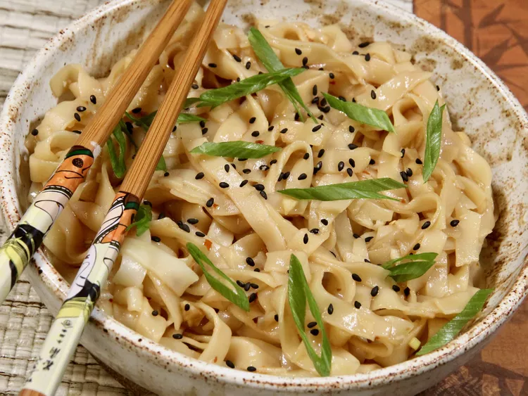

garlic Sesame Noodles

This Asian noodle dish is saucy, garlicky, and just a little spicy. You can control the spiciness by the amount of chili flakes you use. Feel free to add some veggies or top with a fried egg for an even heartier meal. This may be served hot or cold, but we prefer ours hot.
Ingredients
- 3 tablespoons low sodium soy sauce
- 4 garlic cloves, minced
- 1 tablespoon sliced green onions
Steps
- Stir soy sauce, garlic, oyster sauce, rice vinegar, sesame oil, chili flakes, brown sugar, chicken bouillon powder, and white part of the green onion in a small bowl. Set aside.
- Meanwhile, heat a small dry skillet over medium heat. Add sesame seeds and toast until seeds are fragrant, about 1 minute.
- Taste and adjust seasonings, if necessary. To serve, divide noodles between two bowls, and garnish with green onion slices and toasted sesame seeds.